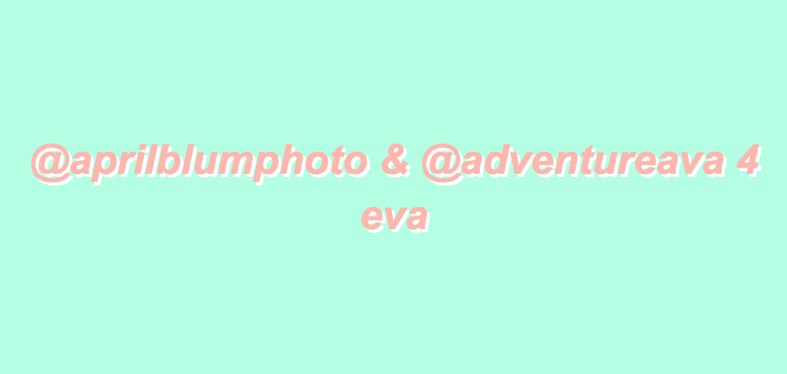
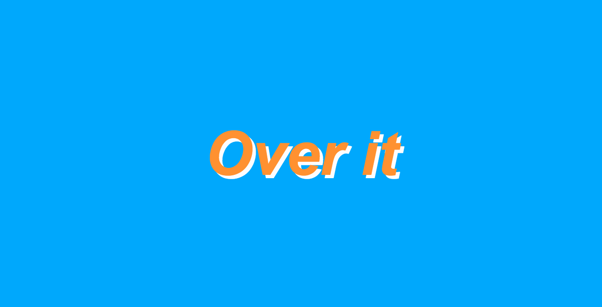
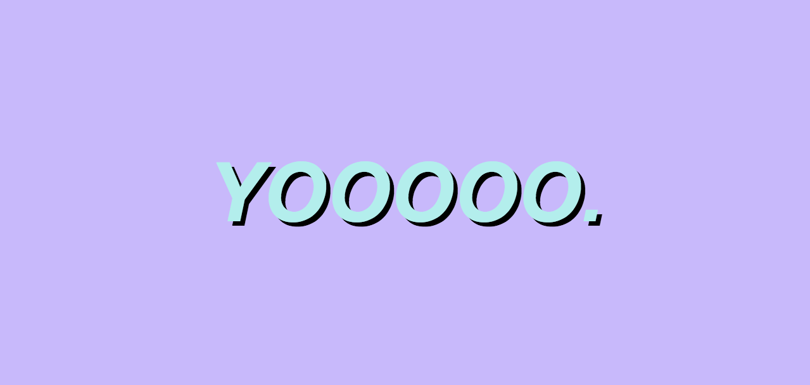

Obviously the perfect place to talk about aesthetic is in this really bland webpage. Nonetheless I'll make it work. For the interactive webstie I found that the aesthetic website was the best. It was super fun and funny to just type out random words onto the grid and distort it to no end or just make it look like some text document from photoshop. It really doesn't seem that exciting but I had so much fun playing with all these different colors and distortion! This is what I chose to save forever and always!
  Clearly I was more into the colors and so even just that says a lot about me! Imagine what you can learn just by watching someone mess about with this website! You see what they think is either aesthetically pleasing or totally the ugliest thing on the planet, both being very usefull.
This website made me think of a few things because I'm very into a certain color palate and looking at things I find pretty (especially since I'm a photographer) so this is what I thought of while using this website.
Both of these videos are really aesthetically pleasing for me to look at so I couldn't help but think of them. Even if they are two completely different videos and styles! Here's a song that reminded me of the wesbite I went on.
Maybe it's because I feel super cool listening to that song when I walk to school but aesthetically speaking I think it's pretty darn good.